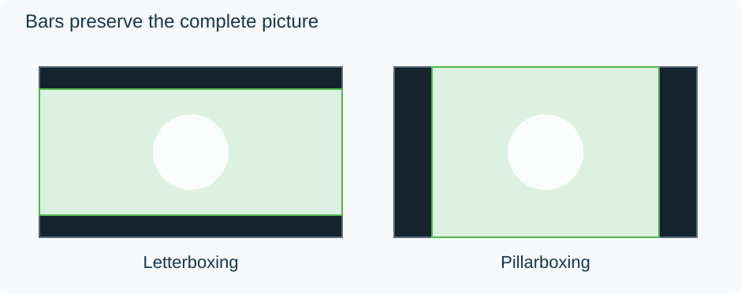

Letterboxing and Pillarboxing
A wide film on a taller screen leaves unused space above and below. A narrow picture on a wider screen leaves space at the sides. These are letterboxing and pillarboxing: the player preserves the picture's proportions while fitting the entire rectangle.

Original proportional examples on 16:9 screens. Green marks the active image.
The geometry comes from uniform scaling. To fit a 2.4:1 film into a 1920 × 1080 screen, use the full width: 1920/2.4 = 800 pixels high. The unused 280 rows divide into 140 above and 140 below. Stretching the picture to 1080 high would make its contents taller. Filling the height without stretching would push its side edges off screen.
Two files can produce the same television picture
Imagine two copies of that film:
| Copy | Stored frame | What happens on a 1920 × 1080 display |
|---|---|---|
| A | 1920 × 800 active picture | The player supplies 140 rows of space above/below |
| B | 1920 × 1080, including 140 black rows at each edge | The player fits the whole frame; the borders are already samples in it |
On this screen, their visible compositions can be identical. In A, the display space lies outside the video frame. In B, the black borders are part of what the decoder reconstructs.
That difference becomes visible when the screen shape changes.
Move both copies to a 2560 × 1080 screen
Copy A scales by 2560/1920 = 4/3. Its picture becomes approximately 2560 × 1066.67, nearly filling the ultrawide screen. Only about 6.67 pixels of ideal space remain above and below.
Copy B still presents a 16:9 frame, because the coded border rows count toward its shape. Fitting that frame to the same screen uses the full 1080 height and only 1920 width. There are 320 pixels of space on either side, while the film retains its 140 stored border rows above and below.
The film now has borders on all four sides, sometimes called windowboxing. The player has correctly fitted the rectangle it received. That rectangle was larger than the active film image.
The numerical examples assume square pixels and ideal continuous scaling; final pixel placement can be rounded.
Decide which rectangle to retain
This distinction helps with an Emby file whose bars persist under a display-size change. Inspect the decoded frame: do its outer rows or columns contain black samples, or does the player add space around a border-free picture?
A crop can remove stored border samples. A display zoom can conceal them while playing. Neither is equivalent to stretching the image, and neither automatically identifies which regions are safe to discard.
Some films change aspect ratio for selected sequences. A subtitle, credit, or opening title can also occupy a border that is empty in another scene. Establish the largest intended composition before creating a permanently cropped version. For an uncropped source, borders are often the space needed to keep that composition visible.